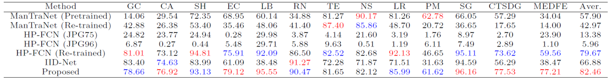
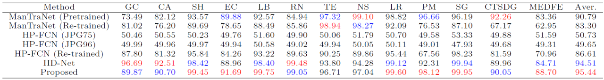
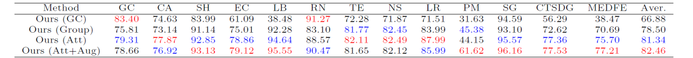
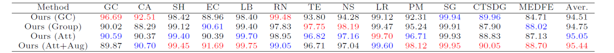

ACM MM 2022
Image Inpainting Detection via Enriched Attentive Pattern with
Near Original Image Augmentation
As deep learning-based inpainting methods have achieved increasingly better results, its malicious use, e.g. removing objects to report fake news or to provide fake evidence, is becoming threatening. Previous works have provided rich discussions on network architectures, e.g. even performing Neural Architecture Search to obtain the optimal model architecture. However, there are rooms in other aspects. In our work, we provide comprehensive efforts from data and feature aspects. From the data aspect, as harder samples in the training data usually lead to stronger detection models, we propose near original image augmentation that pushes the inpainted images closer to the original ones (without distortion and inpainting) as the input images, which is proved to improve the detection accuracy. From the feature aspect, we propose to extract the attentive pattern. With the designed attentive pattern, the knowledge of different inpainting methods can be better exploited during the training phase. Finally, extensive experiments are conducted. In our evaluation, we consider the scenarios where the inpainting masks, which are used to generate the testing set, have a distribution gap from those masks used to produce the training set. Thus, the comparisons are conducted on a newly proposed dataset, where testing masks are inconsistent with the training ones. The experimental results show the superiority of the proposed method and the effectiveness of each component. All our codes and data will be online available.
The framework of our proposed inpainting detection network. At the data end, the near original image augmentation is applied to create harder samples to increase the difficulty of the training set and make the model precept more diverse inpainting traces. At the feature end, a novel attentive pattern is extracted to enrich the inpainting traces with the knowledge distilled from diverse inpainting methods.
Table 1: F-measure results of different methods. The best and second-best results are denoted in red and blue.
Table 2: AUC results of different methods. The best and second-best results are denoted in red and blue.
Table 3: Ablation studies using f-measure as the measure. The best and second-best results are denoted in red and blue.
Table 4: Ablation studies using AUC as the measure. The best and second-best results are denoted in red and blue.
Figure 6: Visual results for inpainting detection. The first two rows’ inputs are made by EC. The third and forth rows’ inputs are made by PM. The last two rows’ inputs are made by MEDFE.
Resource
Citation
@inproceedings{yang2022attentive_pattern,
title={Image Inpainting Detection via Enriched Attentive Pattern with Near Original Image Augmentation},
author={Yang, Wenhan and Cai, Rizhao and Kot, Alex},
booktitle={ACM Int. Conf. Multimedia},
year={2022}
}
Resource
[ManTraNet] Yue Wu, Wael AbdAlmageed, and Premkumar Natarajan. 2019. ManTra-Net: Manipulation Tracing Network for Detection and Localization of Image Forgeries With Anomalous Features. In Proc. IEEE Int’l Conf. Computer Vision and Pattern Recognition. 9535–9544.
[HP-FCN] Haodong Li and Jiwu Huang. 2019. Localization of Deep Inpainting Using High-Pass Fully Convolutional Network. In Proc. IEEE Int’l Conf. Computer Vision. 8300–8309.
[IID-Net] HaiweiWu and Jiantao Zhou. 2021. IID-Net: Image Inpainting Detection Network via Neural Architecture Search and Attention. IEEE Trans. on Circuits and Systems for Video Technology (2021), 1–1.